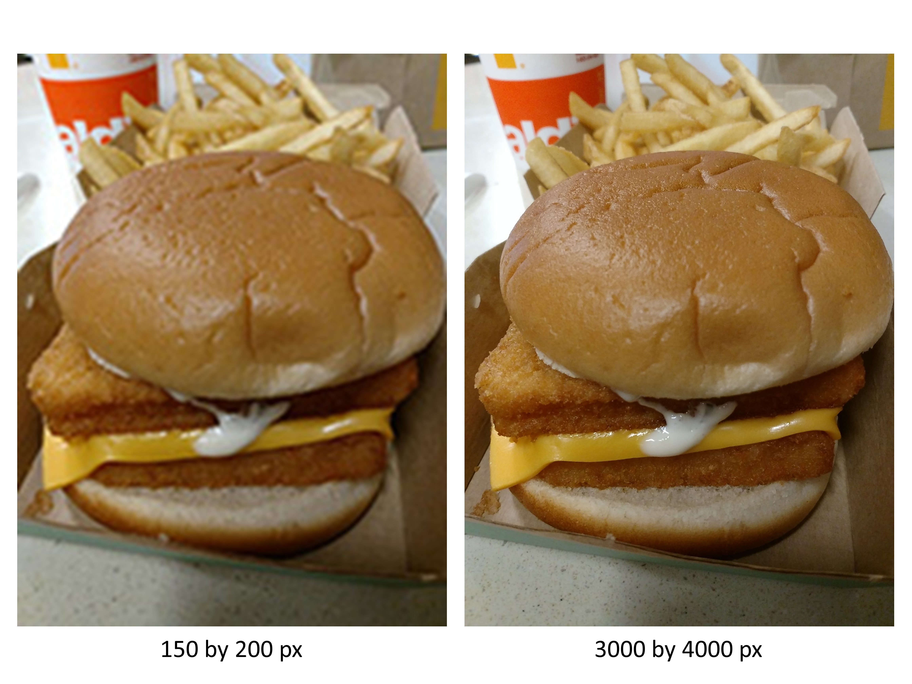
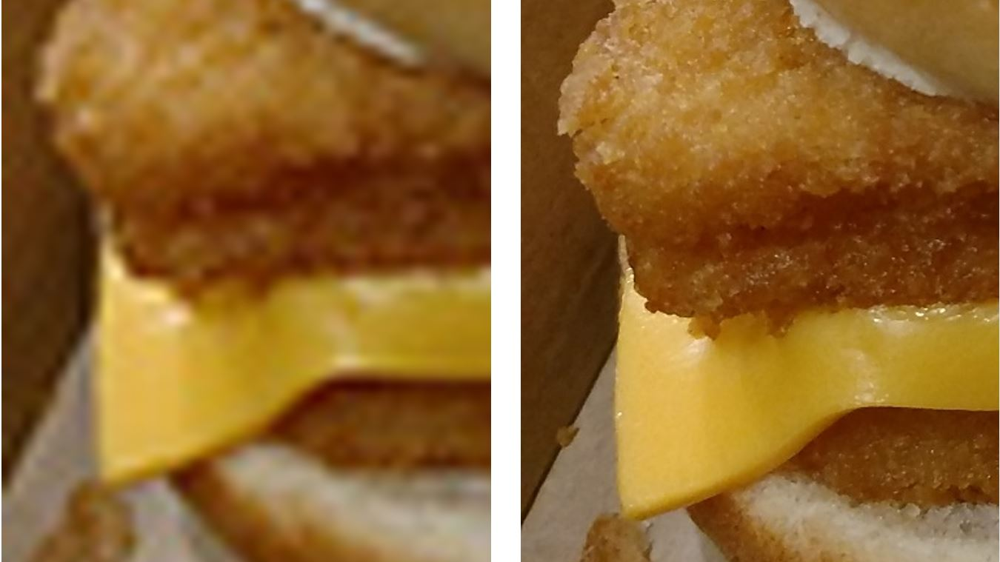

Pixel Perfect Poster Printing
Kevin Dyke, Maps and Spatial Data
lib-map@okstate.edu, 405-744-9731
Thanks to the generosity of the Dr. James and Mrs. Elizabeth Wise, the Library is able to provide free large format poster printing to OSU students, faculty, and staff.
Our service
- Two prints per semester.
- Two paper options. Satin photo or plain bond paper.
- Two day turnaround. That is, submit your job on Monday at 1pm, it will be ready by Wednesday at 1pm.
- Online job submission. Read the guidelines and submit at https://info.library.okstate.edu/poster-printing/
Designing your poster
Designing a poster for the first time can be a daunting, unfamiliar process.
But it doesn't have to be!
Remember
What follows are merely a set of guidelines. Being creative is always good, as long as your design remains functional
Choosing Fonts
Show restraint
Suggestion: pick two fonts, one serifed, one sans-serif.
Serif
Sans Serif
Serif
Sans Serif
Use your serifed font for paragraphs and longer bits of text.
Use a sans serif font for your title, headers, and any other short pieces.
Font sizing
Design your poster so that it's readable from 3-4 feet away.
When in doubt, make it larger.
Useful sizing guidelines
- Your title needs to be the largest text on your poster. As such it should be at least 60 pt, upwards of 90 pt depending on the length of your title.
- Don't forget your name. Make it big! Don't be humble!
- Paragraph text should be a minimum of 30 pt.
- Headers should fall between your title and paragraph sizing so as to create a distinct visual hierarchy.
Title (90 pt)
Header (55 pt)
Paragraph (30 pt)
Images
Never make an image larger after adding/placing it on your poster.
The size it comes in as is its full size. You can make it smaller, but going bigger means entering pixelvania.
When pulling a picture from a website, be sure to:
- Cite your source!
- Right click and select Open Image in New Tab. This allows you to see how big the image is and if it's large enough to suit your needs.
An example
Full page view in Powerpoint. Looks a bit fuzzy, but not terrible
When viewed at 100%, you can see just how bad it will look
Sources for stock photos
Use a curated site such as Unsplash.
Nik Shuliahin_-_panoramio.jpg){kind=link}
When possible, use your own
Sizing your poster in PowerPoint
For sizing in Google Slides and Canva, visit https://info.library.okstate.edu/poster-printing/poster-sizing
What about tables?
An all too common problem with academic posters is that they need to include tables, frequently from journal articles or books.
Scaling these tiny graphics to a poster appropriate size oftentimes means a blurry table.
The best way to include a table is to recreate it, either using a drawing program such as Adobe Illustrator, or within PowerPoint itself.
If it feels too large to recreate in this manner, then you should probably reconsider including it!
| SERIES | TOUR | SHORTLIST | CROWDSOURCE | |
| Set of places | X | X | X | |
| A narrative provided | X | X | ||
| Show photos for each location | X | X | X | |
| Crowdsourced from audience | X | |||
| Organized into categories | X | X | ||
| Audience clicks through tabs | X | X |
Content and design
- Less is always more.
- Resist the urge to use every bit of space.
- ALWAYS leave an adequate margin (at least 1/4 inch (6.35mm), ideally 1/2 inch (12.7mm) ).
Visit Colin Purrington's poster design tips web site for everything I cover here, and more!
https://colinpurrington.com/tips/poster-design/
For a number of example posters along with thoughtful critique.
Exporting your Poster as a PDF